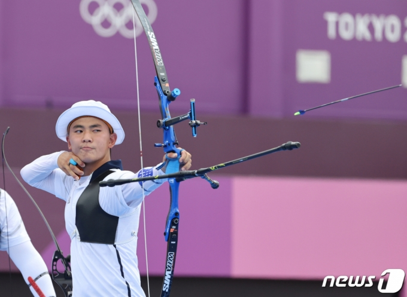
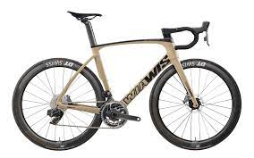
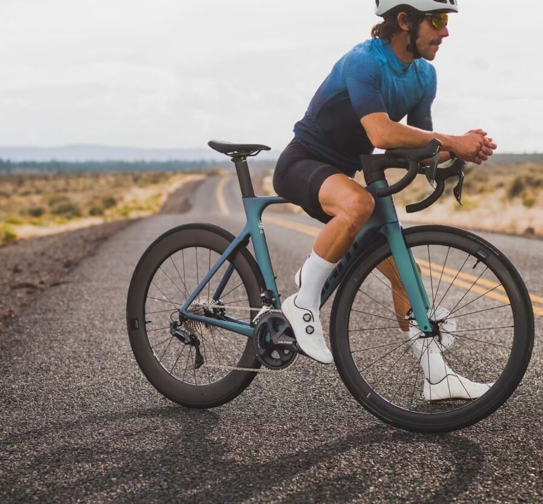
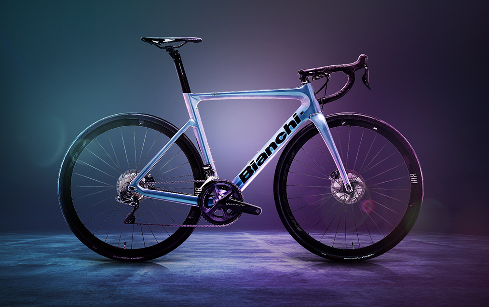
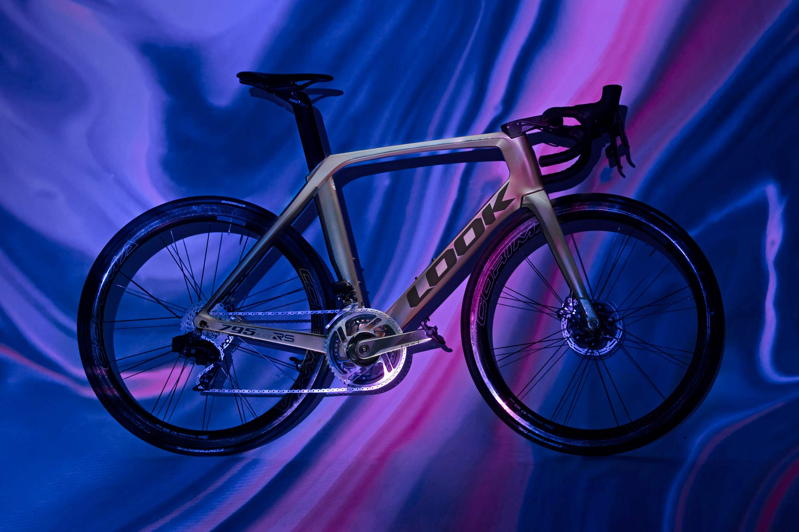
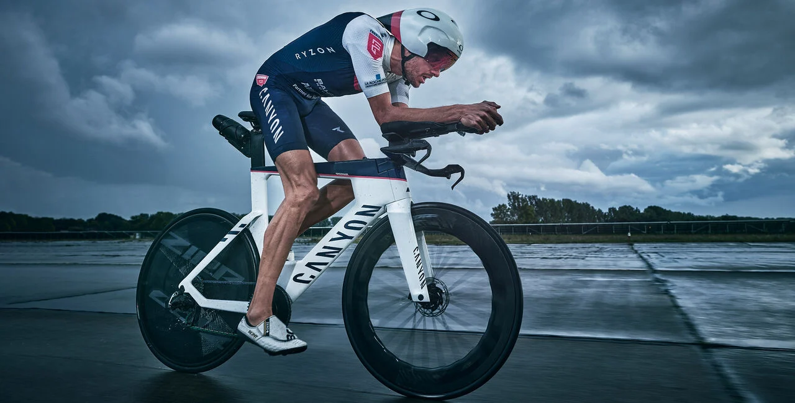
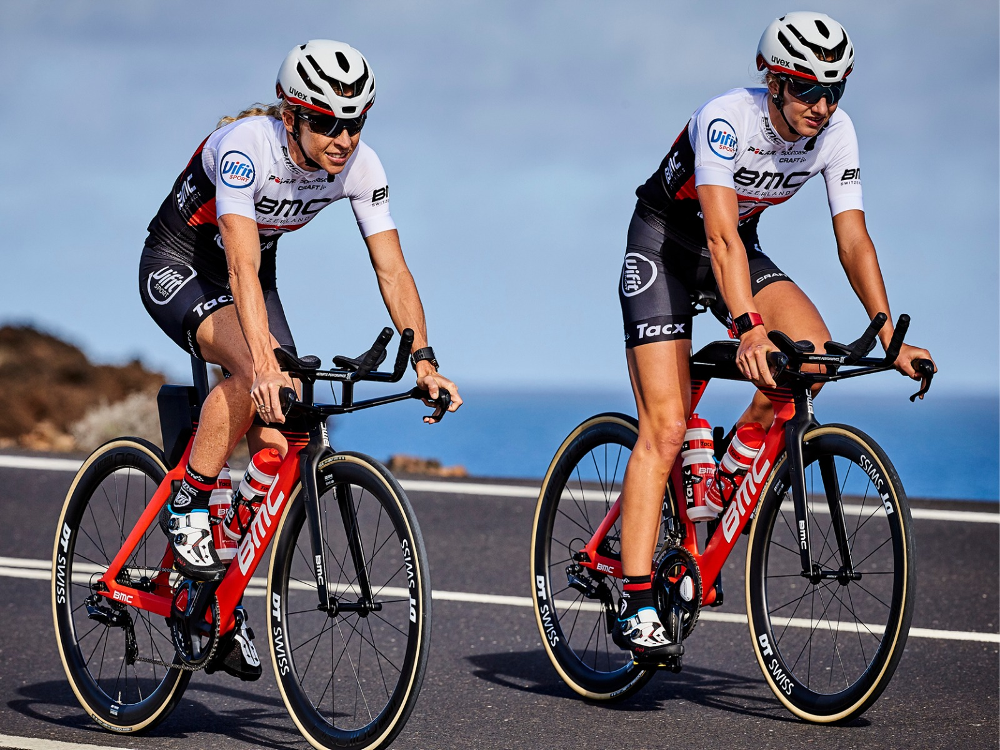

자전거의 브랜드들


WIAWIS
대한민국의 스포츠 용품 제작 기업으로 세계 양궁 점유율 60%으로 1등 기업이며,
양궁을 만들던 기술인 나노카본기술을 바탕으로 카본 자전거 사업을 시작했다.

GIANT
대만의 자전거 메이커.
자전거 시장 점유율, 매출, 생산 대수 모두 세계 1위인 자전거 업계의 거인.
자사 자전거뿐만 아니라 미국의 유명 브랜드 TREK 자전거도 일부 OEM 생산하고 있다.
규모에 걸맞게 장르를 가리지 않고 다양한 종류의 자전거를 출시하고 있다.

Bianchi
이탈리아의 자전거 브랜드로
세계에서 가장 오래된 브랜드이다.
1885년에 21세의 에두아르도 비앙키가 밀라노의 니로네 7번가에 설립한 공방에서 시작했다.

LOOK
프랑스의 자전거 브랜드로
1951년 설립된 '룩'은, 원래 스키 장비를 생산했다.
스키 바인딩에 기반을 두어 제작한 사이클링 용클릿페달을 개발하게 된다.

CANYON
독일
의 자전거 브랜드이며, 특이하게도 소매상을 두지 않고 소비자가 본사와 직접 거래를 하는 방식이기
때문에 탁월한 가성비를 자랑한다.
TREK
미국의 자전거 브랜드로
미국에서 캐논데일,스페셜라이즈드와 함께 인기3대에 들고 있으며,심플한 디자인으로 유명하다.

BMC
스위스의 자전거 브랜드. 공식 명칭은 BMC Switzerland 이지만 통상 BMC라고 부른다.
굵고 직선적인 에어로 지향적 프레임과 큼지막한 브랜드로고가 트레이드 마크이다.